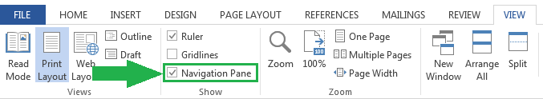
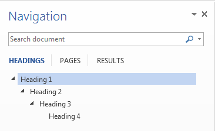
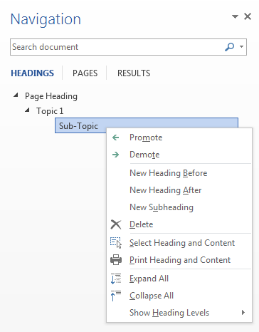
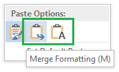
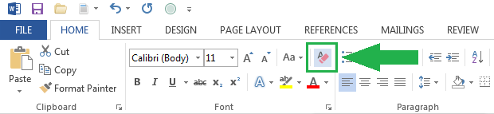

The Conversion Guide is a reference for preparing Word documents for conversion to HTML.
This Conversion Guide outlines ways to prepare your content in Word so that it can be processed into HTML easily and effectively, and uploaded to a learning management system such as BCIT's Learning Hub.
Word documents serve as the build files for the modules in your course. Build files include:
This guide introduces a variety of course production elements - different ways to display course content. When crafting the content of your build file, you can include any of these elements.
Below is an example of a quiz element:
Elements have various components:
When we receive your build file, the course production team will use it to quickly convert the content into HTML and upload it to the Learning Hub.
Below are some before and after examples of content converted from Word into web format.
Here are some things to consider when preparing your content:
The Navigation Pane is a great way to view the structure of your content. Under the View menu, check the Navigation Pane box.
The Navigation Pane give you a good overview of the structure of your content, and allows you to move quickly around your document by clicking on a heading.
Ideally the navigation follows a "stair-step" content structure. 
By right-clicking on a heading, you can gain access to various tools for working on your build files.
In the example above, selecting Promote would change Sub-Topic to Heading 2.
Word comments are the best way to leave instructions for the course production team:
Alternatively, you can press Ctrl + Alt + M on a Windows computer or Command + Option + A on a Mac.
Instructions that are embedded directly in the text will likely be missed!
If you're pasting content from other sources, try to clear or merge the formatting so that the text uses the Normal style. This ensures that hidden formatting in Word won't emerge in the HTML.
If you forget this step, you can always go back and clear the formatting later.
When you include other files (like PowerPoints or PDFs) with your build request, it's helpful if their names do not include spaces. Spaces in a file name can cause problems when browsers try to locate the file.
A good file name:
bsnc-2000-stephens-learning.pdf
It's also helpful if the text in your Word document links directly to your additional files so that there's no question about where the files should be linked.
When you're preparing your build file, try to give new pages different titles so that students can more easily find them in the Table of Contents. Any text with the Heading 1 style will become a new page, and the more unique the page name, the better.
To request a link to another file (like PowerPoints or PDFs), insert a title along with the file name using Word Heading 1 styling in the exact spot where you would like the file to appear in the TOC:
The above syntax in Word will output to HTML as:
Refer to the images below to see which Word tools we recommend for creating your build file.
| Name | Available | Note | x1 | x2 | y1 | y2 |
|---|---|---|---|---|---|---|
| Paste Special | Depends | Always use the "Text Only" when pasting content from external sources. | 1 | 7 | 3 | 76 |
| Cut/Copy | Yes | Use this tool to Cut or Copy text within your word document. | 7 | 24 | 5 | 50 |
| Format Painter | No | This tool could cause problems with the HTML output. | 7 | 24 | 51 | 74 |
| Font/Size | No | Do not use because any changes will be ignored in HTML. | 25.4 | 54 | 9 | 39 |
| Change Case | Yes | You can use this tool to change the case of your text. | 54.76 | 60.5 | 9 | 39 |
| Clear Formatting | Yes | This is useful for cleaning up content pasted from external sources. | 61.2 | 65 | 9 | 39 |
| Bold/Italic | Yes | These styles will carry over into the HTML. | 25.4 | 32.5 | 44 | 68 |
| Underline | No | This could be confused with a hyperlink. Use Bold/Italic instead. | 32.5 | 37.5 | 44 | 68 |
| Strikethrough & Sub/Superscript | Yes | These styles will carry over into the HTML. | 37.5 | 48.4 | 44 | 68 |
| Text Color | No | Do not use because any changes will be ignored in HTML. | 49 | 65 | 44 | 68 |
| Text Alignment | Depends | These changes will be ignored however if you would like something aligned please leave a comment in your document. | 66 | 80 | 44 | 68 |
| Line Spacing | No | Do not use because any changes will be ignored in HTML. | 81 | 86.5 | 44 | 68 |
| Borders and Backgrounds | No | Do not use because any changes will be ignored in HTML. | 87.5 | 99 | 44 | 68 |
| Lists | Depends | Typically, this is not a problem. If you are emulating a particular convention (Eg. legal documents), please leave a comment indicating the reason with your specific requirements. | 66 | 82 | 9 | 39 |
| Indentation | No | Do not use because any changes will be ignored in HTML. | 82.7 | 90.3 | 9 | 39 |
| Sort | Yes | Be prepared to undo ;) | 91 | 95 | 9 | 39 |
| Formatting Symbols | Yes | This will be ignored in HTML, but we encourage it's use to help you format. | 95.7 | 99 | 9 | 39 |
| Name | Available | Note | x1 | y1 | x2 | y2 |
|---|---|---|---|---|---|---|
| Normal | Yes | The majority of your text will use this style. | .5 | 10.5 | 2 | 23 |
| No Spacing | No | This will be ignored. | 11.5 | 21.5 | 2 | 23 |
| Heading 1 | Depends | Only use this style to indicate a new page. | 22.5 | 32 | 2 | 23 |
| Sub-Headings | Depends | Avoid choosing headings for aesthetic reasons. Use headings to chunk your content into a hiearchy — always descend one heading level at a time (example: h1, h2, h3, etc.). Do not use more than 6 levels. | 33 | 86.5 | 2 | 23 |
| Title | Depends | Use this to indicate the name of the module (or sub-module) title. | 87 | 98.5 | 2 | 23 |
| All other styles | No | These will be ignored. | .5 | 98.5 | 25 | 67.25 |
| Create Style | No | Custom styles will be ignored. | .5 | 20.5 | 70 | 79 |
| Clear Formatting | Yes | We recommend using this whenever pasting content from an external source. It removes 99% of unwanted formatting. | .5 | 20.5 | 80 | 89 |
| Apply Styles... | No | This will be ignored. | .5 | 20.5 | 90 | 99 |
| Name | Available | Note | x1 | y1 | x2 | y2 |
|---|---|---|---|---|---|---|
| Cover Page | No | This will be removed before production. | .5 | 18 | 3 | 27 |
| Whitespace | Depends | This will be ignored. | .5 | 18 | 29 | 78 |
| Tables | Depends | Use this for presenting data or structured content. Never use tables for layouts! | 19 | 27 | 3 | 78 |
| Pictures | Depends | You can embed images but be aware that Word can shrink your image if it's larger than the width of the page. It's best to provide seperate files for large images. | 28 | 36.25 | 3 | 78 |
| Online Pictures | Depends | Same as pictures. | 36.5 | 44 | 3 | 78 |
| Shapes | No | Don't use. The LTC has graphic artists on-hand to assist you in the creation of illustrations, charts, and diagrams. | 44.25 | 52 | 3 | 78 |
| Smart Art and Charts | No | Don't use. The LTC has graphic artists on-hand to assist you in the creation of illustrations, charts, and diagrams. | 52.25 | 69 | 3 | 51 |
| Screenshot | Depends | Same as pictures. | 52.25 | 69 | 53 | 78 |
| Online Video | No | Provide a link to the media instead. | 70 | 78 | 3 | 78 |
| Hyperlink | Depends | Use this to link to a file, website or an email address. | 79 | 99 | 3 | 27 |
| Interlinking | No | Do not use. Use hyperlinks instead. | 79 | 99 | 29 | 78 |
| Name | Available | Note | x1 | y1 | x2 | y2 |
|---|---|---|---|---|---|---|
| Comment | Yes | Instructions in comments are better than implied visual changes. | .5 | 10.5 | 3 | 78 |
| Header, Footer & Pagination: | No | These will be ignored. | 11.5 | 30.5 | 3 | 78 |
| Text | No | These will be ignored. | 31.5 | 75 | 3 | 78 |
| Equation | No | This tool is problematic. Consult the Course Production team to discuss alternatives. | 76 | 91 | 3 | 25 |
| Symbol | Depends | If you are using an unusual symbol, please leave a comment to ensure it is converted into HTML. | 76 | 91 | 27 | 52 |
| Flash | No | This will be ignored. | 92 | 99.5 | 3 | 78 |
It's recommended that you avoid using any other tools not covered here.
The following documents will help you get started with your next project. Choose a document and start writing!
| Name | Description |
|---|---|
| Simple Working Document |
Sometimes the best place to start is with a basic file. |
| Overview Module |
One example of a "Getting Started" module you could use as an introduction to your course. |
| Content Light Module |
Useful for courses where content is primarily external (PDFs, links, etc). |
| Content Heavy Module |
Useful for courses where there is a lot of content provided directly within the course itself. |
| Course Element Notes |
This set of notes used by the Occupational Health and Safety (OCHS) program was used to ensure all course modules contained the same elements. |